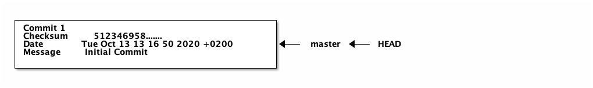

Version Control for the Uninigiated
The Covid19-Pandemic forced all of society to start adopting to digital infrastructure. The Pandemic education sector incredibly hard. This fact (probably) holds for the whole world. German high-schools had to catch up to years of basically not evolving.
When politicians decided that schools are going all-digital, I was hoping they would spend some time teaching kids some useful skills around the tools they could use to accomplish school tasks. One pet-peeve of mine is version control. Most people around me fall into one of two camps.
- The final-final-final-really-final-report.docx camp
- The version control inside Word etc. is more than enough
The second camp, for the most part, ignores versioning. I never saw someone find something in the history provided by Word. But maybe I'm off here. Anyway, I'm of the firm belief that both camps could improve their respective workflows if they adopt proper version control.
The first camp doesn't lose anything. They just run a commit instead of making the next final copy. The second camp does have to introduce an extra step. Committing once to give your version a ''name'' is probably worth it.
Even though I use Git as the tool presented here, this is not to say it is the be-all and end-all. There are two reasons for Git in my eyes.
- It is currently the standard in the industry
- It is ''libre'' software so that nobody can take it away from me.
If you want to use another tool to accomplish the same things, that is cool with me.
I should also explain that this a small introduction to version control using Git. I know, Git can be extremely powerful. I'm only going to focus on the essential bits. For all a vast majority of people, those will be enough. If you need an in-depth introduction, I recommend ''Pro Git'' by Scott Chacon and Ben Straub (https://git-scm.com/book/en/v2). I'm going to borrow a lot of things from this book. And in case I'm saying something contradictory to the book, the book is right and I'm wrong.
This introduction to version control and Git will discuss version control and its works on a conceptual level. In the second part, I will show you how to use Git to accomplish what we discussed before. The x things we are going to discuss are
- How do I start a project in Git?
- How do I save changes?
- How do I revert changes?
- How do I check what changed?
- How do I keep different parallel versions?
- How do I combine to versions?
- How do I send my changes to another machine? (Using Github as an example)
You can accomplish all of these in a plethora of ways.
I will focus on the methods I use most often.
E.g., I'm only going to talk about a merge and not about rebase.
Again, I recommend Pro Git if you want a discussion about those topics.
1 Concepts of Version Control
In this part, we will look at what we expect from a version control system (VCS). Ideally, most of these points will be self-explanatory, but we will also discuss how Git realizes these requirements.
First, what do we expect from a VCS? It should manage our versions, that's clear from the name. But what does that mean?
- It should Store older versions.
- Allow switching to older versions.
- Make sure nothing changed in the current (already saved) or older version.
- Allow us to try out different things from older versions without overwriting newer versions.
- It should help us to combine two different versions.
The first two points are relatively straightforward. That is what people do who keep copying the files around. The third is less direct. Why would we want to make sure nothing changed in already saved versions? Consider you are writing a report or alike. At some point, you go back to a previous version because you want to start over from that point. So you start to edit your documents. What you just did, destroyed your history. Now the documents that were supposed to store a version at some point in time store an entirely different. You should have made a copy before you edited anything. A VCS would have allowed you to edit the document because a once saved version is set in stone. You can create new versions from it, but you can't destroy an old version.
Points four and five hint at the same idea. In many cases, you want to try out different things. Trying out different things means you want to go into two directions and store both versions without destroying each other's history. And combining different states is the opposite. You tried something, and now you want to combine the best of both. The VCS needs to support this use case. (The VCS can only help you merge two document states if you use a plain text format. Even if you store your document in XML, merging can be challenging, and combining binary files is impossible for any generic tool. There are specific tools to do this, but I'm not going to discuss those here, because A) I don't use them and B) I believe we should use plain text anyway.)
I hope it is now clear what to expect from Git. It can do a lot more, but those are the core principles. We are now going to discuss how Git accomplishes the goals outlined above.
Firstly, what I called a version up to this point is called a commit in Git. A commit is a version that you told Git to save. Once you commit a version to Git, Git will preserve it. Even if the drive corrupts the data, Git will tell you that something happened.
So what does Git store when you commit a version? It stores
- A compressed version of all files
- A checksum (a number summarizing all data in a commit)
- A reference to previous commit(s)
The compressed version of the files allows Git to restore them when needed. The checksum is so that Git notices changes, specifically to older versions. The previous commit(s) enables Git to go back to an older version. A commit has only one last commit in most cases. It is not correct when you merge two commits to combine them. Git will notice that and will give this commit two previous commits referencing the merged versions. The resulting structure is a bunch of commits that are linked by references to the earlier versions. The following picture illustrates the form.
Notice that a commit also stores a commit message as well as the date you created it. The commit message allows you to describe what changed in this version compared to the last, while the date adds meta-information often useful when talking about versions.
How does Git use this structure to allow you to work with different versions of your project? At this point, I have to differentiate between the commit and the files.
When you create a new commit, all files are compressed and moved into your project's Git area.
The Git area is the .git folder your project's directory.
You never have to enter it.
Git fully manages it.
So when you commit and then edit any files, the older version stays wholly intact, and nothing is lost.
Git only keeps a reference to the commit you started from when you began the edit.
When you move this pointer, Git changes the files in your directory, and you can edit them.
Conceptually, that's all that Git does.
There are some safety features.
For example, if you have modified files in the directory, you can not go to an older commit.
And if you go back, you have to give this possible divergent history a name.
Git calls these divergent histories branches.
The standard reference is also a branch that Git calls it master.
There is nothing particular about this name.
It is just the name of the branch git creates by default.
The reference from what commit you are currently working on is, in reality, a reference to a branch.
Git calls this reference HEAD.
The image from before would look like the following if we also include HEAD and names for branches.
But I think we now had enough boring theory. We should start looking at how to use Git. We are going to use the command line to run the commands. If you have questions about how to install Git, you can look that up at https://git-scm.com/book/en/v2/Getting-Started-Installing-Git. I'm also going to draw the corresponding structure as I did before.
2 Working with Git
Using Git's basics is straightforward, and not much can go wrong.
Before you can start using git, you need start a project.
A project is simple a directory.
So creating a project is just:
mkdir project
The next step is to tell Git to set everything up to track files in this project. Run this command in the project directory.
git init
Initialized empty Git repository in ./project/.git/
This command creates the .git directory and sets it up to start adding files and track changes.
To track files in the VCS, you have to add them. This is simply done by git add <file>.
This command does not save it.
It only tells Git that the next time it creates a commit, this file should be included.
touch first-file git add first-file
You can then create a commit by running git commit -m <message>.
This creates a commit with all added files and the message provided by the argument.
If you want to create a commit and save the changes you have made to any file previously added, you can do this with the git commit -a -m <message> command.
git commit -a -m "initial commit"
At this point, the graph is still very simple.

The same information can be viewed with the command git log --graph.
This command list all commits leading up to the commit you are currently working on.
git log --graph
* commit 5123469586d3ec8b93fdfa2ff84786397f61e8b1 (HEAD -> master)
Author: Richard Stewing <richard.stewing@udo.edu>
Date: Tue Oct 13 13:16:50 2020 +0200
initial commit
Let's add some data to the file and then we are going to revert to the old commit. First we add something to the file.
echo "hello" > first-file cat first-file
hello
Let's look at what Git thinks about this changes.
We can use git status.
This command shows you a few things.
It shows
- files that are modified but not added to the next commit
- files that were added to the next commit
- files that were never added to Git
git status
On branch master Changes not staged for commit: (use "git add <file>..." to update what will be committed) (use "git restore <file>..." to discard changes in working directory) modified: first-file no changes added to commit (use "git add" and/or "git commit -a")
This shows us, that the file first-file was modified but not ''staged'' for commit.
This is Git-speak for files that were not yet added.
It also tells us you how to revert changes: git restore <file>....
Let's revert changes:
git restore first-file
Now, the status looks different:
git status
On branch master nothing to commit, working tree clean
And now the changes are gone. Next we are going to make some different changes and commit them.
echo "Welcome" > first-file git commit -a -m "second commit"
Using =git log –graph we can look at the structure git creates:
git log --graph
* commit 26d3660d835870d8a9821ec9815e7cb8b9d8241b (HEAD -> master)
| Author: Richard Stewing <richard.stewing@udo.edu>
| Date: Tue Oct 13 13:55:57 2020 +0200
|
| second commit
|
* commit 5123469586d3ec8b93fdfa2ff84786397f61e8b1
Author: Richard Stewing <richard.stewing@udo.edu>
Date: Tue Oct 13 13:16:50 2020 +0200
initial commit
This now allows us to jump back to the old version and go off in a different direction.
Notice that the following (checking something out) can only be done when the working tree is clean.
Git speak for, no modified files that are tracked by Git exists.
So if you want to do it, you have to commit the changes or restore the last commit. (There are different things you could do, e.g. stashing, but those a bit more advanced.)
git checkout 5123469 -b branch-2
We can now edit the file in a different way and commit it.
echo "Good Day" > first-file git commit -a -m "third commit"
We now have to versions of the file that don't interfere with each other. We can switch to the other version on the master branch. (That's what Git calls this parallel versions.)
git checkout master
cat first-file
Welcome
And we can merge them by calling git merge branch-2.
In this case, Git will notify us that we modified the same file in the same place.
This results in a merge conflict.
git merge branch-2
Auto-merging first-file CONFLICT (content): Merge conflict in first-file Automatic merge failed; fix conflicts and then commit the result.
If we now look at first-file we the to versions marked with special symbols.
cat first-file
<<<<<<< HEAD Welcome ======= Good Day >>>>>>> branch-2
We can now edit the first-file to what ever we like.
For example we can simple combine both versions by appending them.
cat first-file
Welcome Good Day
And then, we can commit those changes:
git commit -a -m "merge resolved"
Sometimes the merge can be done automatically. In that case, Git opens an editor and you can enter a commit message and Git creates the commit accordingly. Congratulation! You just learned all the basics of Git.
The last thing, I want to talk about is distribution. Git also allows to share the versions between machine. We are only going to talk about Github.
Once you signed up to Github, you can use the web interface to create a new repository on the server. Github then offers you a step by step instruction to push an existing repository to Github or clone the empty repository from Github. ''Clone'' is what Git calls the download of an existing repository. If you want to clone a repository from Github you use the command:
git clone https://github.com/username/reponame
If you want to share your code, you generally do that using git push.
It is important that the branch you are locally on has a counterpart on the server.
You can set this up using git push -u origin <remote-branch>.
This sets the current local branch up to track the <remote-branch>.
You can then just git push.
Pushing requires that the newest version exists in your local history.
This requires to pull changes to your local machine that happened while you were making changes.
You can do this by calling git pull.
This downloads changes and then tries to merge them.
If there are conflicts, you have to resolve them just like a local merge, if there aren't any, then it creates a merge commit automatically.
This makes sharing what you are working on very easy. And the best part is, that besides the creation process of the repository, there is nothing special. It would work exactly the same way, when using Gitlab etc.
Note that it is generally advised to run git fetch and then git merge instead of git pull.
Fetch downloads the changes and Merge tries to apply them.
In most cases, git pull does the same thing but these two commands allow you to look at the changes before blindly applying them.
When you pull a branch from a server you have no corresponding branch locally, you have to set that up.
It is generally enough to run git checkout -b <local-branch> <origin>/<remote-branch>.
This creates a local branch that tracks the remote branch and allows you to work of that version.
I think that's it.
If you know and use these basics regularly,
you quickly won't have to think about them but they will help you work more confidently with the high number of versions that are created in a project life cycle.
Even if you start by only using the master branch, you will get comfortable with a powerful tool, that will come in handy with bigger projects.
I started eight years ago and I was total rubbish in the beginning but I got better and now I use Git for just about everything.
Even if you never use Git and switch to something else (maybe Mercurial?), please stop using these half-baked version control systems.